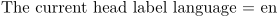

Contents
Summary
The instances of
\
label
language
query a label language.
Instances
| \headlanguage | |
| \labellanguage | |
| \mathlabellanguage | |
| \taglabellanguage | |
| \unitlanguage | |
| \operatorlanguage | |
| \prefixlanguage | |
| \suffixlanguage | |
| \btxlabellanguage |
Description
These macros return the current two-letter language identifier of the associated label.
Examples
Example 1
-
The current head label language = \headlanguage
- 
Notes
See also
Help from ConTeXt-Mailinglist/Forum
All issues with:
- \headlanguage on the mailing list (all results)
- \headlanguage on the mailing list (subject only)
- \headlanguage on stack exchange
- \headlanguage in ConTeXt's source
- \labellanguage on the mailing list (all results)
- \labellanguage on the mailing list (subject only)
- \labellanguage on stack exchange
- \labellanguage in ConTeXt's source
- \mathlabellanguage on the mailing list (all results)
- \mathlabellanguage on the mailing list (subject only)
- \mathlabellanguage on stack exchange
- \mathlabellanguage in ConTeXt's source
- \taglabellanguage on the mailing list (all results)
- \taglabellanguage on the mailing list (subject only)
- \taglabellanguage on stack exchange
- \taglabellanguage in ConTeXt's source
- \unitlanguage on the mailing list (all results)
- \unitlanguage on the mailing list (subject only)
- \unitlanguage on stack exchange
- \unitlanguage in ConTeXt's source
- \operatorlanguage on the mailing list (all results)
- \operatorlanguage on the mailing list (subject only)
- \operatorlanguage on stack exchange
- \operatorlanguage in ConTeXt's source
- \prefixlanguage on the mailing list (all results)
- \prefixlanguage on the mailing list (subject only)
- \prefixlanguage on stack exchange
- \prefixlanguage in ConTeXt's source